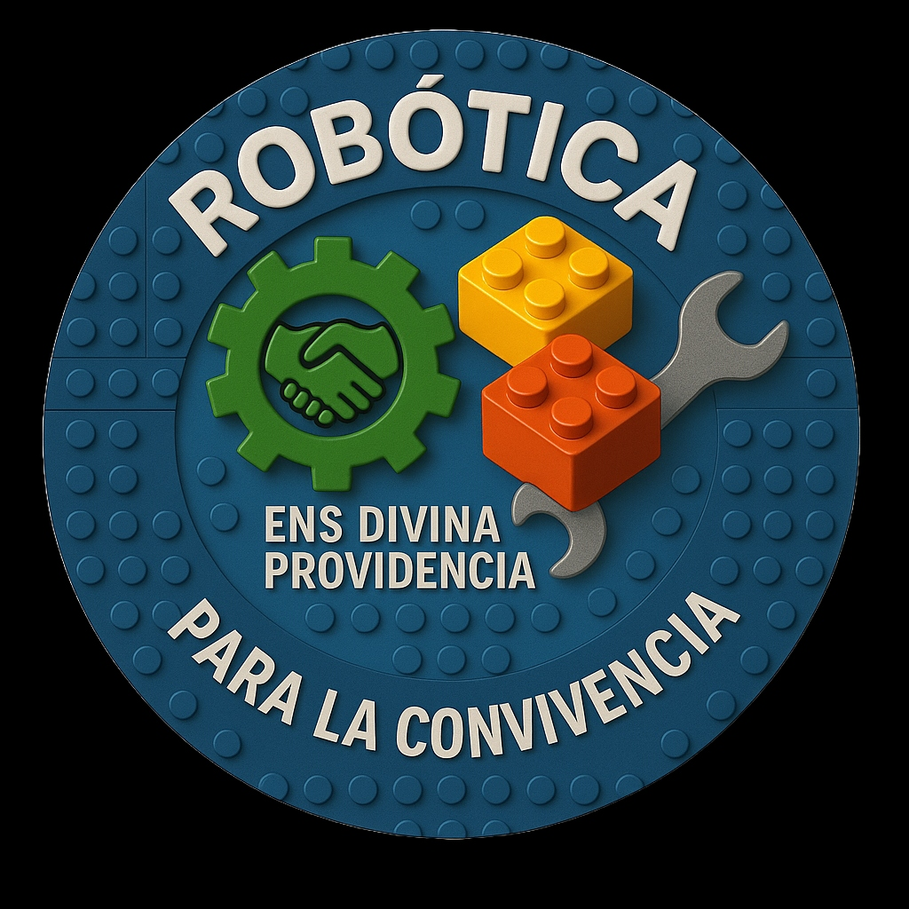
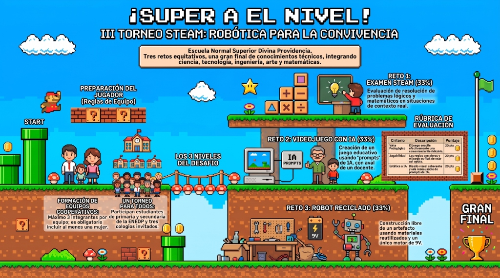
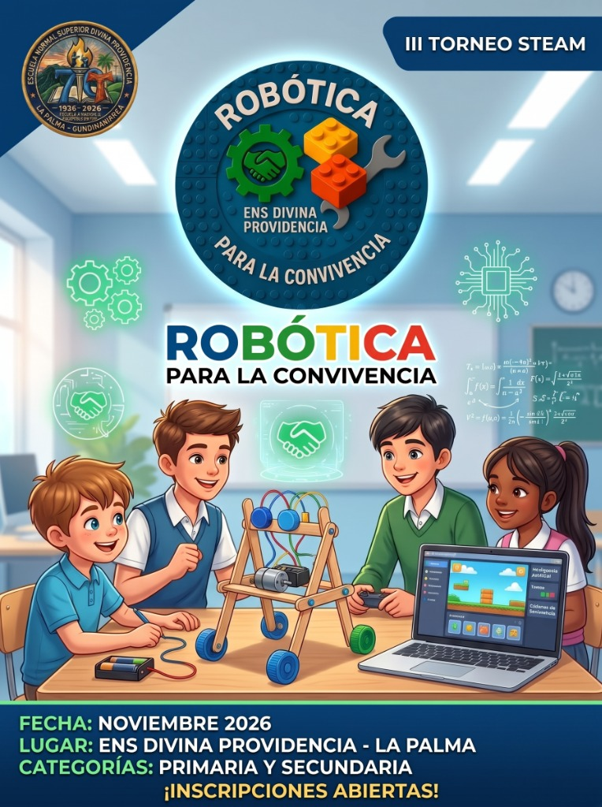

🤝
Convivencia
Los retos se resuelven cooperando. El torneo busca formar maestros y maestras de paz.

Torneo STEAMEscuela Normal Superior Divina Providencia · La Palma, Cundinamarca
Tres retos, equipos cooperativos y una gran final donde la ciencia, la tecnología, la ingeniería, el arte y las matemáticas se ponen al servicio de la paz.
Enfoque pedagógico
El torneo integra las áreas STEAM con la formación para la convivencia. No gana quien sabe más solo, sino quien construye mejor en equipo.
Los retos se resuelven cooperando. El torneo busca formar maestros y maestras de paz.
Equipos de máximo 3 integrantes con al menos una mujer, para garantizar participación equitativa.
Resolución de problemas lógicos y matemáticos, programación, diseño y construcción.
Participan estudiantes de primaria y secundaria de la ENEDP y tres colegios invitados.
Marco teórico
El torneo parte del Proyecto «Robótica para la Convivencia» y del Proyecto Formando Formadores (PFF) de la Normal. Cada prueba tiene un sustento pedagógico propio.
Integrar ciencia, tecnología, ingeniería, arte y matemáticas permite formar estudiantes capaces de transferir el conocimiento disciplinar a contextos auténticos (Bybee, 2013) y mejorar el desempeño en pruebas por competencias como las Pruebas Saber.
Pensamiento computacional (Wing, 2006): formular problemas y soluciones de modo que un sistema pueda ejecutarlos.
Aprender creando juegos, no solo consumiéndolos (Kapp, 2012): el estudiante debe organizar, secuenciar y comunicar un saber para que otro lo aprenda.
IA generativa como andamiaje creativo, guiada por una estructura de «prompt maestro» y en línea con las orientaciones de la UNESCO (2021): el estudiante mantiene el control y la autoría del propósito educativo.
Según el construccionismo de Papert (1980), el aprendizaje se consolida al construir artefactos tangibles y significativos. La libertad de diseño —limitada solo por el uso de un motor— privilegia la creatividad por encima de copiar un modelo.
El uso de materiales reciclables une la formación técnica con la educación ambiental, en coherencia con los ODS 4 (educación de calidad) y ODS 12 (producción y consumo responsables).
El proyecto lleva el pensamiento computacional y la robótica más allá del aula urbana, hacia sedes rurales e instituciones vecinas, en un territorio marcado por su condición de posconflicto. Con la primaria, los colegios municipales y los equipos mixtos, el torneo es un espacio de encuentro, convivencia, equidad de género y trabajo colaborativo.
Referencias: Bybee (2013) · Wing (2006) · Kapp (2012) · UNESCO (2021) · Papert (1980).
Estudiantes de primaria y bachillerato de la ENS Divina Providencia (sede principal y sedes rurales). Por primera vez se abre la participación a la primaria, y se invita a tres instituciones del municipio:
Equipos de máximo 3 integrantes · no se permiten equipos solo de hombres (al menos una mujer) · sí se permiten equipos solo de mujeres.
Los 3 niveles del desafío
Evaluación de resolución de problemas lógicos y matemáticos en situaciones de contexto real.
33 %Creación de un juego educativo usando prompts de inteligencia artificial, con aval de un docente.
33 %Construcción libre de un artefacto con materiales reutilizados y un único motor de 9 V.
33 %Examen de ciencias, matemáticas, ingeniería y tecnología con problemas de contexto, afín a las pruebas tipo Saber.
Cada equipo elige la temática y desarrolla su juego con IA, partiendo del Generador de Prompt Maestro. Se entrega como HTML o enlace, con evidencias del proceso (capturas, historial de prompts) y aval de un docente; sin aval no se evalúa. Una rúbrica aplicada por docentes lo valora, y hay 3 tutorías virtuales de apoyo.
Artefacto con un único motor de 9 V. Solo se compran motor, portapilas y batería; todo lo demás (cableado, estructura, ruedas…) es material reciclado. Diseño libre; hay taller de soldadura y robótica.
Temática clara, coherente y adecuada para un juego educativo.
20 ptsEnseña un contenido o competencia identificable y verificable al jugar.
20 ptsDiseño visual y ambientación coherentes y cuidados.
20 ptsReglas y mecánica claras; se juega sin ayuda externa.
20 ptsDificultad y lenguaje adecuados a la edad y el grado.
20 ptsEl camino recorrido
Invitación pública y primera experiencia de retos STEAM en la Normal. Mira la publicación en Instagram y la presentación en Canva.
Se presenta el III Torneo a la comunidad educativa y se invita a los colegios del municipio.
Las instituciones invitadas confirman cuántos equipos y grados participan.
Presentación, acompañamiento en el desarrollo del videojuego y ajustes finales con entrega.
Aplicado en la ENS Divina Providencia, junto al taller de soldadura y robótica en los Espacios de Robótica.
Entrega y sustentación del videojuego educativo, y construcción y demostración del artefacto reciclado.
Reto de ciencia y tecnología entre los equipos clasificados, premiación y cierre del III Torneo STEAM.

Productos del torneo
Juegos educativos 2026 hechos con apoyo de IA. Pulsa «Jugar» para abrirlos aquí mismo.
Guía a Chispa, come la gema con la respuesta correcta y reúne los cinco cristales de poder. Derechos humanos y respeto.
Aventura por la célula en la montaña del Maflaverse: esquiva virus, atrapa cristales y responde a los sabios.
Recorre laboratorio, gimnasia y música reuniendo orbes y tomando decisiones de grupo en una noche de misterio.
Aventura por el ecosistema del torneo en La Palma: explora y responde para cuidar el territorio.
Galería
Equipos pensando, debatiendo y construyendo juntos.

Convocatoria